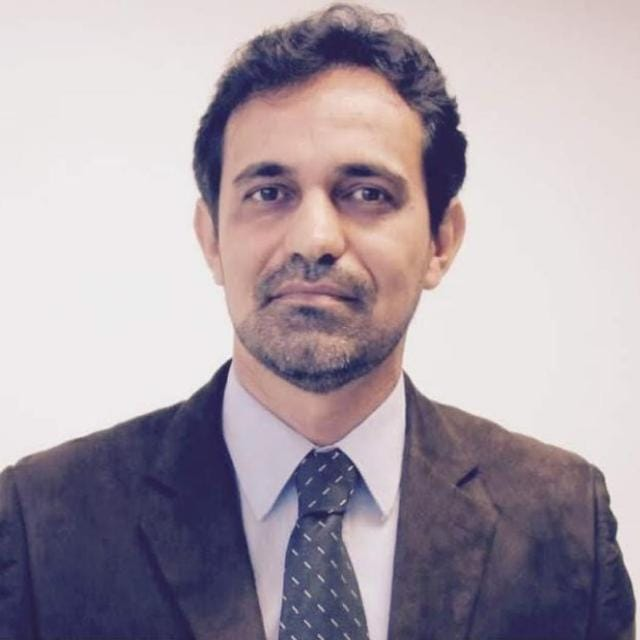

Apresentação
Nome: André Luís Marçal Longuinho Silva

Cidade: Sucursal MG - Divinópolis/MG
Cientista da Computação, Advogado e Agropecuarista.
O profissional com um currículo multidisciplinar com vasta experiência.
O objetivo é apresentar-se para seus potenciais clientes, parceiros profissionais e alocação na prestação de serviços para o mercado.
E-mail: andre.marcal@pdbomdespacho.com.br
Certificações
Cursos de Capacitação:
Nome do curso:
Carga horária:
Ano de realização:
Experiências
Advogado
Escritório próprio
Período: 01/01/1930 a 01/01/1940
Atuação na área de Direito Cibernético, Direito Minerário, Execução Fiscal,
Crime contra a Ordem Tributária e o Sistema Financeiro Nacionais.
Analista em Tecnologia da Informação e Comunicação
Órgão Público Federal
Período: 01/01/1920 a 01/01/1930
Atuação como Administrador de Banco de Dados, Desenvolvimento de Sistemas e como Perito em Computação Científica.
1º Tenente especialista em Computação Científica
Exército Brasileiro
Período: 01/01/1910 a 01/01/1920
Atuação na área de Crimes Cibernéticos nas Forças Armadas Brasileiras.
Analista Desenvolvimento de Sistemas
Centura do Brasil
Período: 01/01/1900 a 01/01/1910
Atuação na área de Desenvolvimento de Sistemas e como Analista de performance de sistemas distribuidos.
Habilidades Técnicas
- Advogado em sistema contencioso e não contencioso.
- Resolução de conflitos por mediação e conciliação.
- Assessoria jurídica em matéria de Justiça Restaurativa.
- Assessoria jurídica em matéria cível, constitucional, tributária e financeira.
- Assessoria jurídica em matéria de Tutela Coletiva (Direito do Cidadão e Patrimônio Público).
- Assessoria jurídica em matéria Criminal (Crime contra a Ordem Tributária, contra o Sistema Financeiro e crimes residuais afetos ao Órgão.).
- Assessoria jurídica na área Eleitoral.
- Experiência em todos os softwares necessários para a execução das atividades laborais.